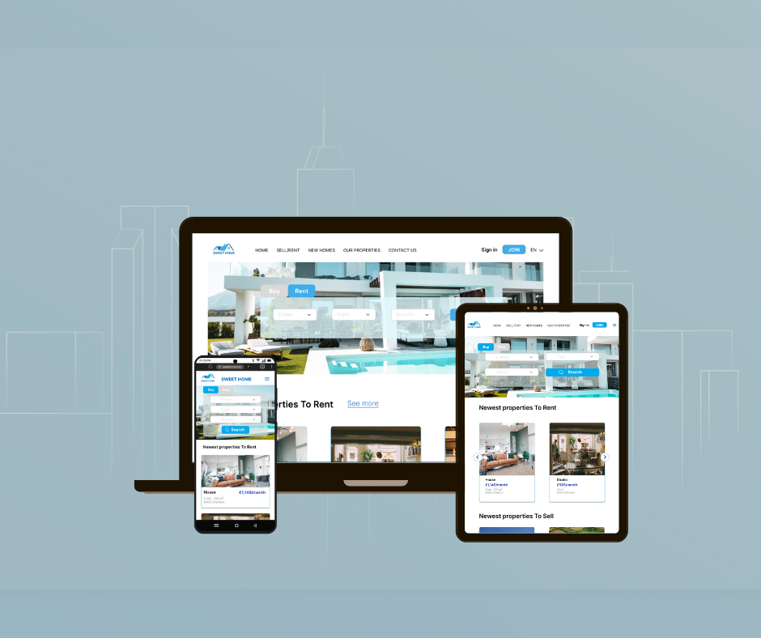
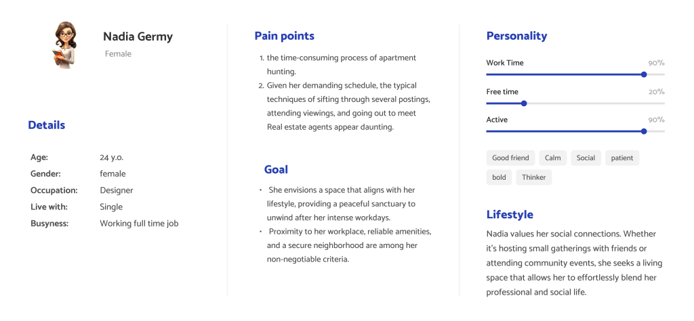
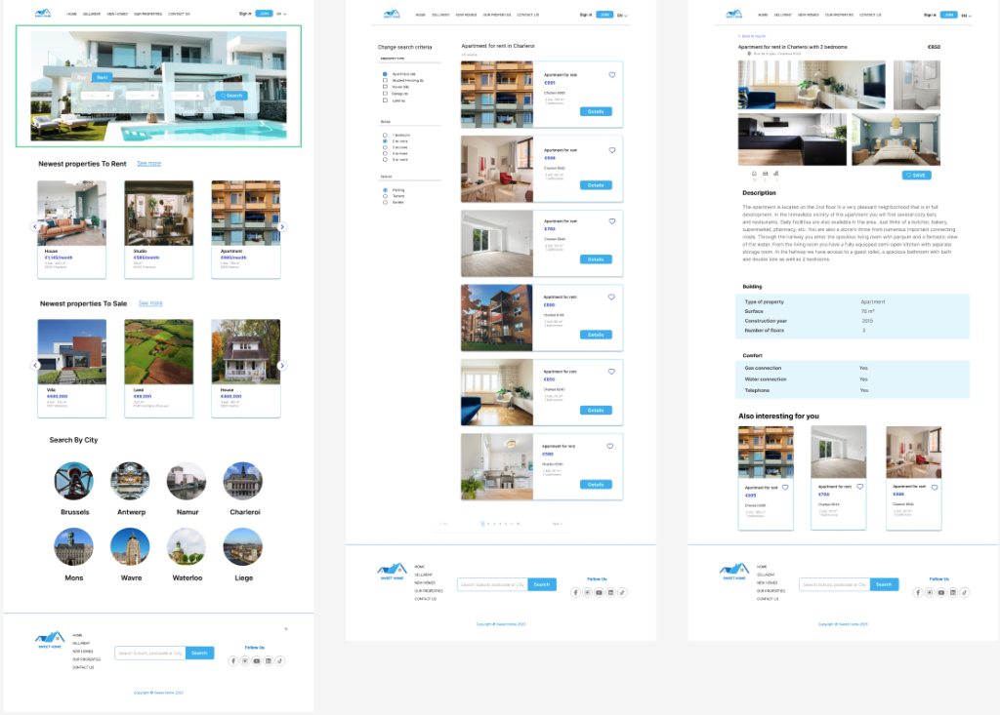
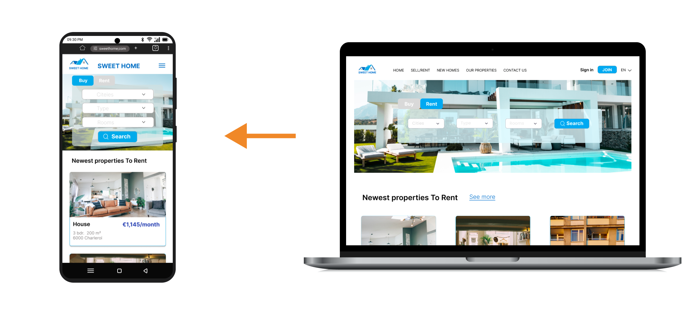

Inji Alasttal
SWEET HOME
SWEET HOME is a real estate website that helps users search for an apartment for rent, buy new properties, and sell their properties as investments.
Deliverables: User research report. Affinity map. Task flows. Wireframe. UI. Prototype.
Role: Product Designer. Duration: One week
Challenge
Create a real estate website that helps users rent, sell, and buy real estate. Also, have an attractive home page and be responsive to all devices.
Goals
- Design the web app to create a professional, trustworthy, and friendly user experience.
- Optimize the web experience on mobile devices;
- Create an easy and flowy web navigation between pages;
- Save and remove properties easily, or contact to make an appointment.
Define
problem
Many people are looking for an apartment in a specific country or region, whether furnished or not, and they are also looking for a buyer for their property or even to buy a new property for investment or as a cozy home. On the Sweethome website, users will find what they need.
Solution
I created a responsive web app to let users easily use it on their desks, at work, at home, or anywhere to find their dream house or apartment, take an appointment, or check the availability of their favorite properties to rent or buy.
Empathise
During the research phase, I conducted a competitor analysis, a business analysis, and a sitemap. I was able to gain a thorough understanding of the market, potential customers, and key real estate requirements. I created a personas to collect data and conduct research based on it.
IDEATION
For a user research, I conducted a study and created the personas to analyze pain points and determine priorities. Then I generated Sitemap to understand where in the process users were having troubles, created sketches, Lo-Fi and Hi-Fi prototypes. The project timeline is one week. Let’s dive into the process of creating a responsive website.
Sitemap
In the site map, i’ll make sure to uncover a seamless user experience with a sitemap designed for flow. From new homes to rent and buy proprties, you can easily navigate through our intuitive interface.
Low-Fi Prototype:
I fleshed out the UI sketches, created low-fi wireframes, and got down the clickable prototype for validation testing. I conducted validation testing, and found out a couple of issues need to be adjusted. For example, to make filters more prominent on the landing page so it can give user a clear signal that it is the primary call to action.
Hi-Fi Prototype:
After validating my Lo-Fi prototype, I made iterations to my design and moved into the Hi-Fi phase. I created a Hi-Fi prototype for the site’s flow, including an animated background, photos of the proprites, detiels, Navigation Bar and easy searching on the sities.
Validation
Responsive design
The web is now mainly accessed from mobile & tablet devices, so i made sure that the website content is properly displayed on them.

I made a GIF photos to show you the validation of the site. It works fantastic, and I loved the animated background, which gives the site a more attractive look. Also, having easy-to-use navigation is important for any web site, from choosing what you are looking for to the location, makes every step clear and easy to flow.

Conclusion:
This project as a UI designer has been an incredibly fulfilling adventure, and I’m filled with pride and gratitude for the vital lessons I’ve learned along the way. Each day in this role has become a stepping stone towards my professional advancement over the last month, as I continue to use and refine the abilities I’ve learned in real-world circumstances. Notably, I took on the challenge of animating the background in this project, bringing a dynamic and visually interesting element into the user experience and a responsive web app. This endeavor culminated in the successful design of a website that not only meets practical needs but also displays a distinct and innovative look.